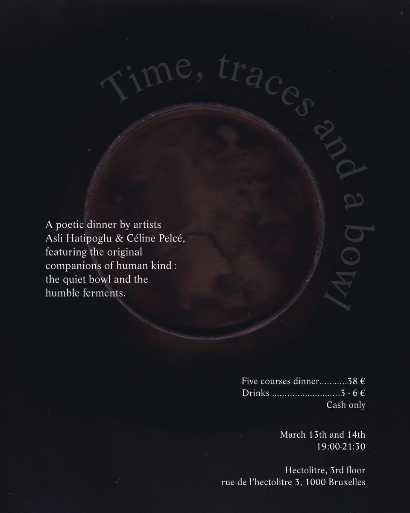

Time, traces and a bowl
by artists Asli Hatipoglu and Céline Pelcé
A poetic dinner by artists Asli Hatipoglu and Céline Pelcé, featuring the original companions of human history: the quiet bowl and the humble ferments. From ancient to contemporary cultures, each course engages with living microorganisms within containers that once lived other lives in somebody else’s home. The bowl can be seen as a cradle of humanity: a simple, everyday vessel for gathering, sheltering and sharing ; while ferments have always accompanied us, nourishing and shaping us on a microbiotic, energetic and temporal level. Together they form a living, evolving relationship at once spiritual and ordinary, silent companions to human lives, inviting us to ask: What do we inherit when we eat? You can expect poetry, patiently crafted fermented dishes, traces and remains that transform throughout the evening as well as small ritual moments of gathering.
Friday& Saturday, 13th& 14th of March, 2026
cahs only
19:00-21:30h
Hectolitre, 3rd floor, Rue de l'Hectolitre 3, Brussels
Accessibility: For accessibility inquiries, please contact us via direct message to arrange support.
5-course vegan dinner: 38 euros (cash on location)
Drinks: 3-6 euros on location
Reservation sheet:
https://forms.gle/P7byz2aDdJvh4nMj8
About the artists:
Asli Hatipoglu
Aslı Hatipoğlu (TH/TR) is an interdisciplinary artist whose social practice focuses on curating participatory dinners and installations that shed light on how culinary history and agricultural politics are changing our relationship to food. From working with micro-scale bacteria and yeasts responsible for fermentation to insects such as the domesticated silkworm, Asli critically investigates ways of relating to our environment and ourselves. Currently she has been working with the shifting narrative of an artist and a tour-guide, merging fiction and reality with story-telling in performative acts as a way to critically question today’s systems of production and transform art spaces as a marketable eco-tourism destination.
Asli has held events at the Hectolitre space in recent years with her project “Gustatory Sound” merging music with blindfold eating experience with Ari-Pekka Leinonen, as well as initiating pop-up dinners with other artists. Recently she has hosted Pandan pop-up dinner together with Tehani Amarasuriya as well as ComCom pop-up dinner with Christy Han Nguyen, sharing stories of these diasporas.
Céline Pelcé
Céline Pelcé (FR) works as a designer and artist and approaches food as a poetic and political form of soft power, working with its narrative and symbolic charge, its relationship to landscape, and its dimension of care. She grounds her practice in specific territories, exploring the porous boundaries between societal and non-human worlds, between culinary and agricultural rituals, and seeks to activate the ecosystemic dimension of bodies and imaginaries. She shares these explorations through meals, sculptures and culinary performances, created in collaboration with chefs, artisans and other artists. Working mainly within cultural and artistic institutions, she also develops projects in educational and hospital settings, where cooking and eating are embedded into a philosophy of care.
She developed site-specific methods between 2019 and 2024, through residencies in both rural and urban areas like in Villa Kujoyama (JP), Maison du Peuple in Jura (FR), Villa Glovettes(FR), Marble House project (US) or Somalgors74 (CH). Since 2024, working between France and Belgium, her projects are woven between performances and collaborations with theatre and dance (Cie Facchini, Cie Li(luo), Cie Gosh).
See you soon!!